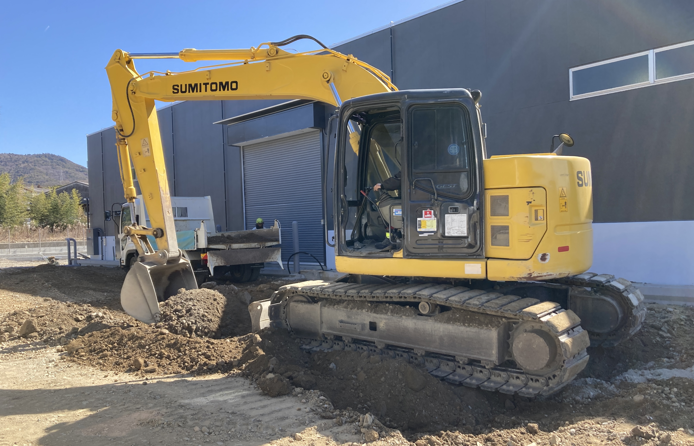
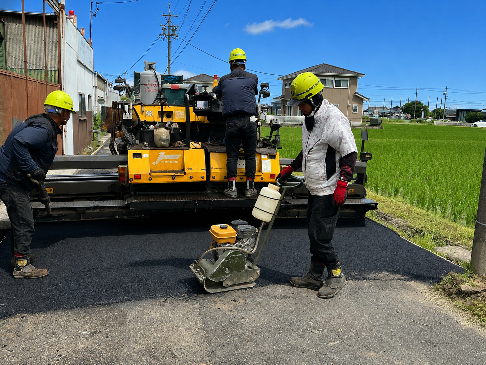
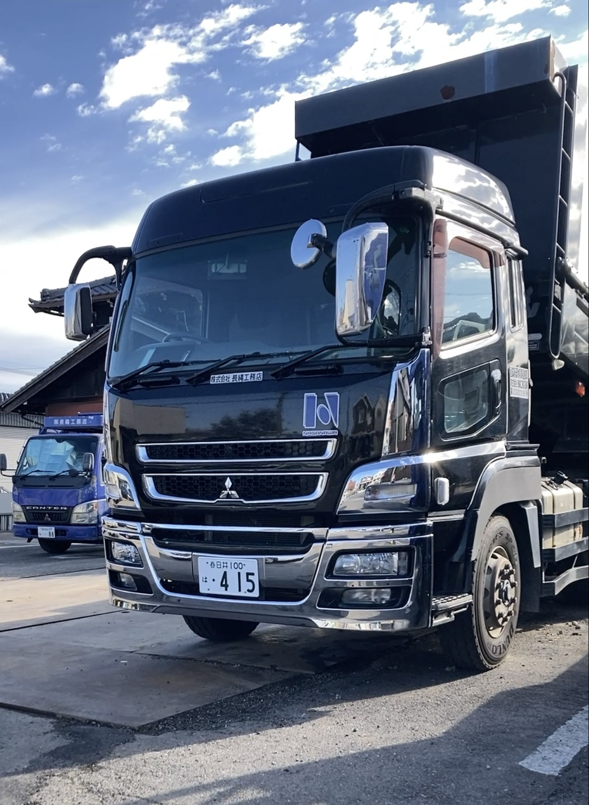

Recruitment
採用情報
未経験から専門職まで、幅広い職種で仲間を募集しています。まずは各職種の仕事内容をご覧ください。

Site Manager
現場監督（施工管理）
現場監督（施工管理）は、舗装・土木工事の現場全体をまとめる司令塔です。工程・品質・安全・原価を管理し、職人や協力会社と連携しながら、工事が計画どおり安全に完成するよう導きます。
図面の確認や役所・お客様との打ち合わせ、施工写真の管理や書類作成まで、業務は多岐にわたります。未経験からでも、先輩監督に同行しながら一つずつ覚えられる体制を整えています。
- 工程・品質・安全・原価の管理
- 職人・協力会社との調整
- 図面確認・役所や施主との打ち合わせ
- 施工写真・書類の作成・管理
Paving Worker
舗装作業員
舗装作業員は、道路・駐車場・歩道などのアスファルト舗装を担う、長縄工務店の中核となる仕事です。路盤づくりからアスファルトの敷きならし、ローラーによる転圧まで、チームで一枚の路面を仕上げます。
最初は先輩社員のサポートからスタート。OJTで道具の使い方や現場の段取りを覚え、経験を積みながら一人前の職人へと成長できます。
- アスファルトの敷きならし・仕上げ
- 路盤・下地の造成
- ローラー等での転圧作業
- 現場の準備・片付け・安全確認


Civil Worker
土木作業員
土木作業員は、排水・側溝・宅地造成・擁壁など、街の基盤をつくる土木工事の現場を担当します。掘削や埋め戻し、コンクリート構造物の施工など、仕事の幅が広いのが特徴です。
重機オペレーターや現場監督と連携しながら、安全第一で作業を進めます。覚えることは多いですが、その分、街に残る仕事としての手ごたえを感じられます。
- 排水・側溝・宅地造成などの施工
- 掘削・埋め戻し・整地作業
- コンクリート構造物の施工補助
- 資材の運搬・現場管理の補助
Heavy Equipment Operator
重機オペレーター
道路工事には重機は必ず必要になります。バックホウなどの重機を扱うのは「車両系建設機械運転者」など重機の種類に応じた免許を持つオペレーターです。
長縄工務店では、有資格のオペレーターが安全・確実に重機を操作し、舗装・土木工事の現場を力強く支えています。
- バックホウ・ショベル系重機の操作
- 車両系建設機械運転者など各種資格保有
- 掘削・整地・積み込み作業全般
- 安全管理を徹底した現場運営


Driver
運転手
重機を現場まで安全に届けるのが運転手の重要な役割です。バックホウやローラーなどの大型重機を積載したトレーラー・大型トラックを操り、工事現場へタイムリーに輸送します。
現場の稼働を止めないためにも、正確・安全な運転技術と段取り力が求められる、なくてはならないポジションです。
- 重機・資材の現場への輸送
- 大型トラック・トレーラーの運転
- 積み下ろし・荷締め作業
- 車両の日常点検・管理
Sales
営業
自治体や民間事業者に対して、工事計画をもとに安全性を具体的に考慮した最適なプランを提案します。単なる"見積もり対応"ではなく、現場を知る会社だからこそできる、実現性の高い提案が強みです。
お客様の要望のヒアリングから、各種資料の作成・整備、丁寧な説明まで、窓口として幅広く対応します。
- 自治体・民間事業者への工事提案・折衝
- お客様ニーズのヒアリングと課題整理
- 工事計画資料・見積書の作成・管理
- 契約から完工までの窓口対応


Back Office
バックオフィス
会社全体を見通し、社員が現場に集中できる環境をつくるのがバックオフィスの役割です。工事に関する事務サポートをはじめ、経理・総務・一般事務など、組織を内側から支える幅広い業務を担います。
「縁の下の力持ち」として、チーム全体のパフォーマンスを最大化する、なくてはならない存在です。
- 工事関連書類の作成・管理サポート
- 経理・出納・請求書管理
- 総務・労務・社内手続き対応
- 電話・来客対応などの一般事務
Requirements
募集要項
新卒・キャリア（第二新卒）
採用募集要項
募集概要
| 採用予定人数 | 若干名 |
|---|---|
| 採用予定職種 |
① 現場監督候補（施工管理） ② 舗装作業員 ③ 土木作業員 ④ 重機オペレーター ⑤ 運転手 ⑥ 営業職 ⑦ バックオフィス |
| 仕事内容 |
● 施工管理（現場監督候補） 舗装工事・土木工事の現場管理、進捗・品質・安全の確認をしていただきます。 ● 舗装・土木作業員 道路のアスファルト舗装・土木工事の現場作業を担当。先輩社員と一緒にOJTで技術を習得できます。 ● 重機オペレーター バックホウなどの重機を操作し、舗装・土木工事の現場を支えます。資格取得支援あり。 ● 運転手 ダンプトラックなどの車両で資材・土砂の運搬を担当。現場を物流面から支えます。 ● 営業職 お客様のニーズをヒアリングし、最適な工事プランを提案・受注までサポートします。 ● バックオフィス 経理・総務・事務を担い、会社全体を裏側から支える重要なポジションです。 |
| 勤務時間 | 8:00〜17:00（現場による） |
| 勤務地 |
春日井市、小牧市及びその周辺がほとんどです ※ 車通勤可（駐車場あり） |
給与・福利厚生・待遇
| 給与（月給） |
月給32万円〜 経験者は"前職以上"保証 |
|---|---|
| 賞与 | 年2回（6月・12月） |
| 手当 | 残業手当 / 資格手当 / 家族手当 / 通勤手当 / 無事故手当 |
| 昇給 | 年1回（4月） |
| 休日休暇 |
固定休みの曜日：日曜日 週休2日制 年間休日107日（令和8年度） GW・夏季・年末年始休暇 家族や子供の用事でお休み調整可 |
| 福利厚生 |
産休・育休取得実績有 車通勤OK / バイク通勤OK 屋内禁煙 寮・社宅有（住み込み）家賃：20,000〜25,000円/月・リフォーム後 築2年 / 間取り1R 社会保険制度有 研修制度有 資格取得支援制度有 制服支給 |
| 試用期間 |
あり（入社後3ヶ月） 試用期間中も条件は本採用時と変更なし。 |
応募方法
| 提出書類 | 履歴書（メールまたは郵送） |
|---|---|
| 選考の流れ |
① 応募・書類送付 ② 書類選考 ③ 面接（1〜2回） ④ 内々定 |
中途採用募集要項
募集概要
| 募集職種 |
① 現場監督および現場監督候補（施工管理） ② 舗装作業員 ③ 土木作業員 ④ 重機オペレーター ⑤ 運転手 ⑥ 営業職 ⑦ バックオフィス |
|---|---|
| 雇用形態 | 正社員 |
| 仕事内容 |
① 現場監督および現場監督候補（施工管理） 舗装・土木工事の現場管理、進捗・品質・安全の確認をしていただきます。 ② 舗装作業員 / ③ 土木作業員 道路のアスファルト舗装・土木工事の現場作業を担当。先輩社員とのOJTで技術を習得できます。 ④ 重機オペレーター バックホウなどの重機を操作し、舗装・土木工事の現場を支えます。資格取得支援あり。 ⑤ 運転手 ダンプトラック・トレーラーで重機や資材を現場へ運搬。安全運転と確実な配送で現場を支えます。 ⑥ 営業職 お客様のニーズをヒアリングし、最適な工事プランを提案・受注までサポートします。 ⑦ バックオフィス 経理・総務・事務を担い、会社全体を裏側から支える重要なポジションです。 |
| 必要資格 |
未経験OK
経験者優遇
普通自動車免許（AT可）建設・土木・舗装の経験がある方は優遇します。 |
| 勤務時間 | 8:00〜17:00（現場による） |
| 勤務地 |
春日井市、小牧市及びその周辺がほとんどです ※ 車通勤可（駐車場あり） |
給与・福利厚生・待遇
| 給与（月給） |
月給32万円〜 経験者は"前職以上"保証 |
|---|---|
| 賞与 | 年2回（6月・12月） |
| 手当 | 残業手当 / 資格手当 / 家族手当 / 通勤手当 / 無事故手当 |
| 昇給 | 年1回（4月） |
| 休日休暇 |
固定休みの曜日：日曜日 週休2日制 年間休日107日（令和8年度） GW・夏季・年末年始休暇 家族や子供の用事でお休み調整可 |
| 福利厚生 |
産休・育休取得実績有 車通勤OK / バイク通勤OK 屋内禁煙 寮・社宅有（住み込み）家賃：20,000〜25,000円/月・リフォーム後 築2年 / 間取り1R 社会保険制度有 研修制度有 資格取得支援制度有 制服支給 |
| 試用期間 |
あり（入社後3ヶ月） 試用期間中も条件は本採用時と変更なし。 |
応募方法
| 提出書類 | 履歴書（メールまたは郵送） まずは電話・メールでのご連絡も歓迎です。 |
|---|---|
| 選考の流れ |
① 応募・ご連絡 ② 書類選考 ③ 面接（1〜2回） ④ 採用 |

Our People
長縄工務店の
誠実な人材像
私たちは、地域の安全を支え誇りが持てる、誠実で明るい人材への育成を大切にしています。技術的なスキルの成長はもちろんのこと、さまざまな機会を通しての人間性の育成を大切にしています。
技術と経験と資格、これら専門性の高い業務の習得と同時に、いつも笑顔でいられるような、堂々とした人としての成長を重視しています。高い技術と高い人間性を目指すことにより、より多くの方々、そして社会の期待に応えるものと考えています。
-
誠実さ
地域の安全を守る責任感と、仕事への真摯な姿勢
-
技術と人間性
専門スキルの習得と、チームを支える人としての成長
-
明るさ・誇り
笑顔で現場に立ち、地域インフラを担う誇りを持つ
Why You Can Relax
未経験でも
安心できる理由
「きつそう」「自分にできるか不安」——その気持ち、よくわかります。
でも、長縄工務店ではそんな不安を一つひとつ解消できる環境があります。
先輩と一緒に
現場を回りながら覚える
入社後、いきなり一人で現場に出ることはありません。 必ず先輩社員と一緒に現場を経験しながら、 見て・聞いて・やってみてを繰り返してスキルアップ。 焦らず、自分のペースで成長できます。
最初から完璧を
求めません
知識ゼロからのスタートで全く問題なし。 「わからなくて当たり前」という文化が根づいているから、 何でも気軽に質問できる雰囲気があります。 ミスを責めるより、なぜそうなったかを一緒に考えます。
大切にするのは
3つだけ
新人に大切にしてほしいことは3つだけ。 「挨拶」「安全第一」「わからないことを聞く姿勢」。 この3つさえあれば、あとは一緒に成長できます。 それ以外のことは入社後に覚えていければOKです。
先輩の声
「土木業界のことは右も左もわからない完全な未経験からのスタートでした。最初は不安もありましたが、現場の最前線で揉まれながら知識を吸収し、一つひとつ経験を重ねるうちに、気づけば今では一通りの業務をスムーズにこなせるようになり、自分の成長を実感しています。未経験からでも、やる気次第でどこまでも成長できるのがこの仕事の魅力です。」
「図面すら読めない状態から始まった私の現場監督人生ですが、先輩や職人さんに支えられ、気づけば５年が経ちました。工程通りに進まない苦労や調整の難しさはありますが、それ以上に「モノづくりの最前線」にいる楽しさがあります。文系理系という枠組みは関係ありません。大切なのは、周囲と協力して一つの目標に向かう熱意です。自分の成長が形となって見えるため、最高のやりがいを日々感じています。」